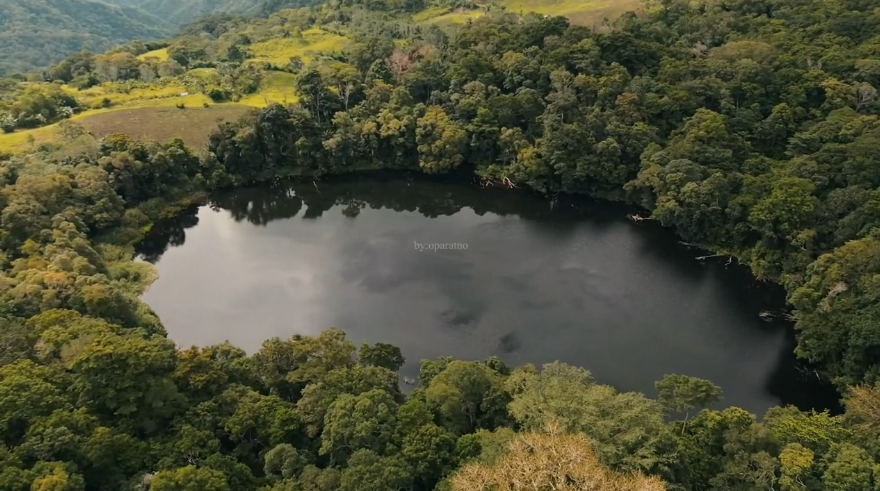

Destinasi Wisata Kotabaru
Keindahan Alam yang Memukau
Kecamatan Kotabaru menyimpan banyak potensi wisata alam yang sangat indah dan menenangkan. Berikut adalah beberapa tempat wisata yang wajib dikunjungi:

Bukit Liaga
Pemandangan bukit yang indah dan air laut yang jernih mengelilingi sangat sangat memanjakan mata dan mempesona.

Tarian Adat Gawi
Tarian Adat yang dilestarikan secara turun temurun, menggambarkan kekayaan budaya NKRI.

Danau Tiwusora
Danau dengan air jernih dan pemandangan bukit yang mengelilingi sangat cocok untuk berfoto dan bersantai.
Informasi & Kontak
Untuk informasi lebih lanjut mengenai akses, tiket masuk, atau panduan wisata, silakan hubungi pengelola tempat wisata berikut: